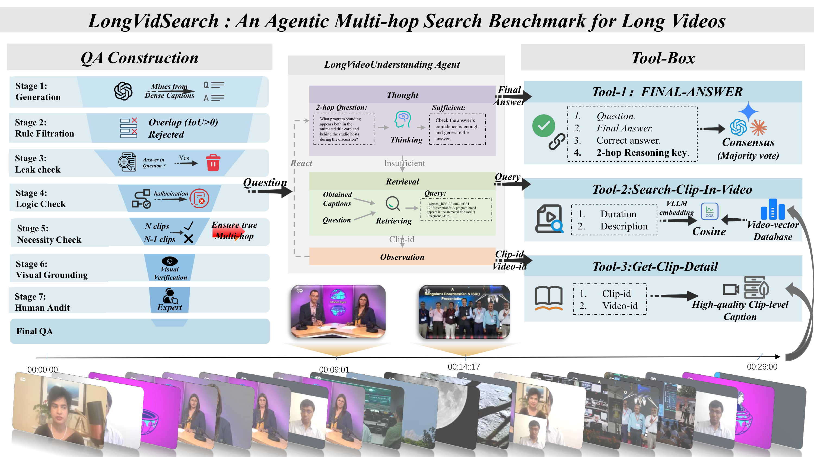

An Agentic Benchmark for Multi-hop Evidence Retrieval Planning in Long Videos

Figure 1: Overview of LongVidSearch. Agents iteratively retrieve clips and read captions via standardized tools, and are evaluated by a three-judge majority-vote protocol.
Long video question answering (Long-Video QA) increasingly relies on agentic tool use to retrieve evidence from long videos. In realistic settings, this process often requires multi-hop retrieval, where agents must iteratively gather multiple discontinuous evidence clips. However, existing long-video benchmarks are largely static: they rarely enforce strict multi-hop retrieval and typically lack a standardized evidence-access interface, making it difficult to separate failures in retrieval planning from those in answer generation.
To address this gap, we introduce LongVidSearch, a benchmark for evaluating agentic multi-hop evidence retrieval planning in long videos under standardized access constraints. LongVidSearch enforces retrieval necessity: a Hop-k question requires exactly k necessary evidence clips, and removing any single clip renders the question unsolvable. The benchmark contains 3,000 questions over 447 long videos (average length 26 minutes), covering four reasoning categories—State Mutation, Causal Inference, Global Summary, and Visual Tracking—with 2-, 3-, and 4-hop evidence requirements.
To ensure fair and controlled evaluation, all agents interact with LongVidSearch through a unified tool interface, which fixes the retrieval backend and isolates the agent’s ability to formulate queries and plan iterative retrieval. In addition to answer accuracy, we measure tool-call cost to analyze the accuracy–efficiency trade-off under identical access conditions.
We evaluate VideoAgent-style QA agents with multiple backbone LLMs using three-judge majority voting. GPT-5 achieves the highest accuracy (42.43), outperforming Gemini 3 Pro (30.97) and GPT-4o (19.20), yet remaining below 50%, highlighting the difficulty of multi-hop retrieval planning. With gold evidence clips, performance becomes near-perfect, confirming retrieval planning as the primary bottleneck.
| Category | 2-Hop | 3-Hop | 4-Hop | Total (Ratio) |
|---|---|---|---|---|
| Causal Inference | 436 | 282 | 144 | 862 (28.7%) |
| Global Summary | 512 | 181 | 166 | 859 (28.6%) |
| Visual Tracking | 653 | 136 | 61 | 850 (28.3%) |
| State Mutation | 238 | 119 | 72 | 429 (14.3%) |
| Overall | 1,839 (61.3%) | 718 (23.9%) | 443 (14.8%) | 3,000 (100%) |
| Model | Overall | State Mutation | Causal Inference | Global Summary | Visual Tracking | ||||||||
|---|---|---|---|---|---|---|---|---|---|---|---|---|---|
| 2h | 3h | 4h | 2h | 3h | 4h | 2h | 3h | 4h | 2h | 3h | 4h | ||
| Closed-Source LLMs | |||||||||||||
| GPT-5 | 42.43 | 38.24 | 36.13 | 22.22 | 47.71 | 43.97 | 39.58 | 44.34 | 35.36 | 29.52 | 49.77 | 37.50 | 29.51 |
| Gemini 3 Pro | 30.97 | 30.25 | 18.49 | 12.50 | 34.17 | 20.92 | 17.36 | 36.72 | 20.44 | 15.66 | 45.48 | 25.00 | 18.03 |
| GPT-4o | 19.20 | 15.55 | 14.29 | 12.50 | 20.18 | 12.77 | 11.81 | 19.73 | 13.81 | 11.45 | 29.40 | 20.59 | 11.48 |
| GPT-4-mini | 18.27 | 15.97 | 5.93 | 4.17 | 15.14 | 10.99 | 6.25 | 20.31 | 16.02 | 12.65 | 31.35 | 20.59 | 11.48 |
| Open-Source LLMs | |||||||||||||
| Qwen3-VL-32B | 29.59 | 29.74 | 27.97 | 15.49 | 29.26 | 22.86 | 18.44 | 34.19 | 20.99 | 16.46 | 40.43 | 25.93 | 22.95 |
| Qwen2.5-VL-72B | 25.30 | 23.95 | 17.65 | 12.50 | 26.38 | 21.99 | 15.97 | 29.49 | 20.44 | 15.06 | 34.00 | 22.79 | 9.84 |
| Qwen3-VL-8B | 18.58 | 16.67 | 12.71 | 9.72 | 14.81 | 11.43 | 11.19 | 20.59 | 16.67 | 15.34 | 28.84 | 17.78 | 15.25 |
| Qwen2.5-7B | 11.10 | 10.92 | 4.20 | 4.17 | 8.72 | 5.32 | 4.86 | 15.82 | 7.73 | 3.61 | 18.99 | 7.35 | 6.56 |
| Qwen2.5-VL-7B | 10.41 | 7.73 | 7.69 | 4.35 | 7.64 | 5.05 | 2.82 | 13.83 | 7.39 | 5.00 | 18.50 | 10.29 | 4.92 |
| Llama-3-8B | 7.73 | 6.72 | 5.88 | 1.39 | 7.57 | 4.96 | 4.86 | 8.20 | 6.08 | 4.22 | 12.71 | 7.35 | 1.64 |
Key Findings: All agents use the same tool set and interact with the same retrieval system, so performance differences primarily reflect their ability to formulate effective queries and plan multi-step evidence acquisition.
Accuracy drops consistently as hop count increases across all models and categories, confirming that multi-hop retrieval planning is fundamentally harder. Even GPT-5, the strongest model, only achieves 42.43% overall—well below 50%—while oracle experiments with golden evidence clips yield near-perfect accuracy, pinpointing retrieval planning as the primary bottleneck.
| Model | Standard Acc (%) | Oracle Acc (%) | Gap (Δ) |
|---|---|---|---|
| Closed-Source LLMs | |||
| GPT-5 | 42.43 | 100.00 | 57.57 |
| Gemini 3 Pro | 30.97 | 99.97 | 69.00 |
| GPT-4o | 19.20 | 99.40 | 80.20 |
| GPT-4-mini | 18.27 | 98.73 | 80.46 |
| Open-Source LLMs | |||
| Qwen3-VL-32B | 29.59 | 98.56 | 68.97 |
| Qwen3-VL-8B | 18.58 | 96.90 | 78.32 |
| Qwen2.5-VL-72B | 25.30 | 98.60 | 73.30 |
| Qwen2.5-VL-7B | 10.41 | 97.23 | 86.82 |
| Qwen2.5-7B | 11.10 | 97.33 | 86.23 |
| Llama-3-8B | 7.73 | 96.89 | 89.16 |
Oracle Analysis: When agents receive golden evidence clips directly, all models achieve near-perfect accuracy (96–100%), yet standard accuracy remains below 43%. The massive gap (Δ = 57–89 points) confirms that retrieval planning—not answer generation—is the primary bottleneck in multi-hop long-video QA.
| Model | Checked | Disagree | Rate |
|---|---|---|---|
| Closed-Source LLMs | |||
| GPT-5 | 598 | 3 | 0.50% |
| Gemini 3 Pro | 601 | 5 | 0.83% |
| GPT-4o | 617 | 6 | 0.97% |
| GPT-4-mini | 628 | 6 | 0.96% |
| Open-Source LLMs | |||
| Qwen3-VL-32B | 607 | 3 | 0.49% |
| Qwen3-VL-8B | 613 | 6 | 0.98% |
| Qwen2.5-VL-72B | 620 | 4 | 0.65% |
| Qwen2.5-VL-7B | 628 | 6 | 0.96% |
| Qwen2.5-7B | 631 | 7 | 1.11% |
| Llama-3-8B | 629 | 8 | 1.27% |
| Overall | 6,172 | 54 | 0.87% |
Evaluation Reliability: Across 6,172 human-verified samples, the three-judge LLM majority vote disagrees with human annotators in only 0.87% of cases, confirming that our automatic evaluation protocol is highly reliable and consistent with expert judgment.
All agents interact with LongVidSearch through the same fixed tool interface:
This fixed interface ensures performance differences primarily reflect agentic retrieval planning, not retriever strength or privileged evidence access.
@inproceedings{longvidsearch2026,
title = {LongVidSearch: An Agentic Benchmark for Multi-hop Evidence Retrieval Planning in Long Videos},
author = {Rongyi Yu and Chenyuan Duan and Hao Liang and Haoze Sun and Peng Pei},
booktitle = {ACM Multimedia},
year = {2026}
}